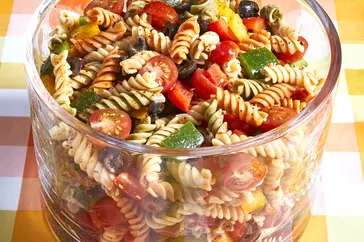

Tomato Pasta Salad 🍅🤩

Description
This pasta salad recipe was given to me by a dear friend many years ago,
and I've been making it ever since! It's great for barbecues.
Ingredients
- 1/2 yellow bell pepper, chopped
- 1 pound tri-colored spiral pasta
- 1 (16 ounce) bottle Italian-style salad dressing
- 1 green bell pepper, chopped
- 1 red bell pepper, diced
- 1 (2.25 ounce) can black olives, chopped
- 2 cups cherry tomatoes, diced
- 6 tablespoons salad seasoning mix
Steps
-
Bring a large pot of lightly salted water to a boil. Cook pasta in the
boiling water, stirring occasionally, until tender yet firm to the bite,
about 10 to 12 minutes; rinse under cold water and drain.
- Whisk Italian dressing and salad spice mix together until smooth.
-
Combine pasta, tomatoes, bell peppers, and olives in a salad bowl; pour
dressing over salad and toss to coat. Refrigerate salad, 8 hours to
overnight.